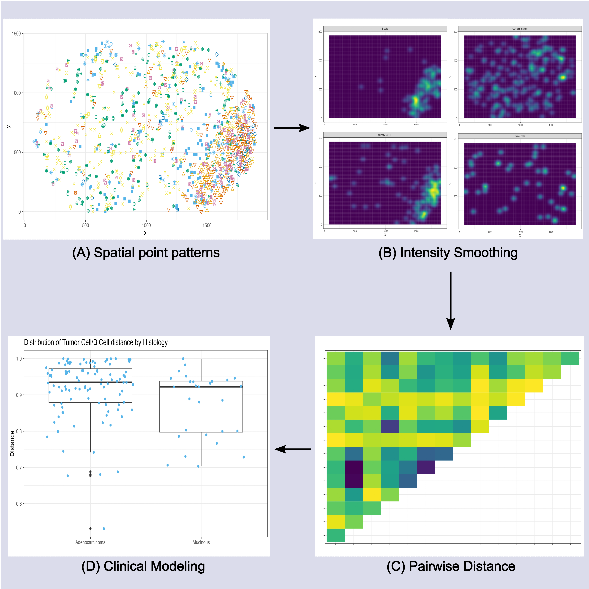

Publications & Software

Spatially Structured Regression for Non-conformable Spaces: Integrating Pathology Imaging and Genomics Data in Cancer
The goal of this project was to develop a method to model the variability in tumor-immune interaction both
within and between tumor biopsies with respect to biopsy level gene expression data. This is challenging
due to the non-conformability of the tumor biopsies.

DIMPLE: An R package to quantify, visualize, and model spatial cellular
interactions from multiplex imaging with distance matrices
The goal of this project was to develop a software package to analyze interaction between
cells of different types in multiplex imaging data in a scalable, computationally efficient
manner.